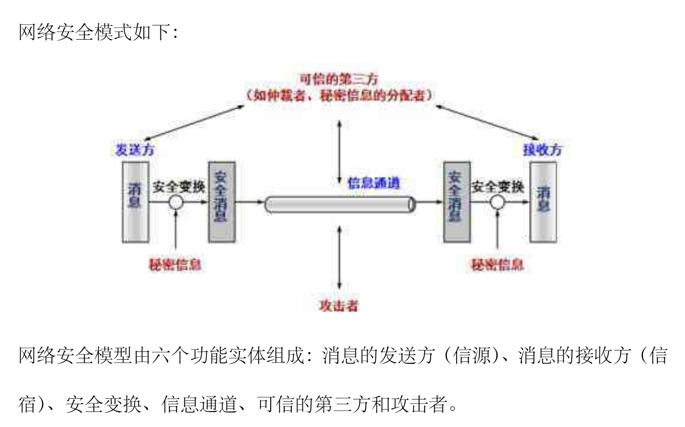
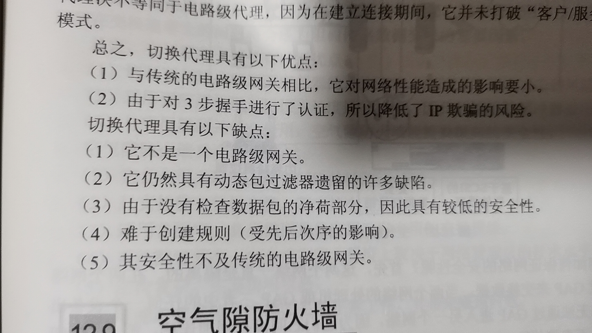
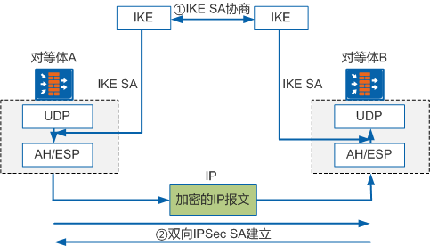
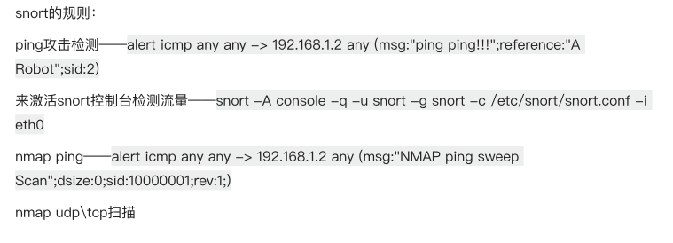
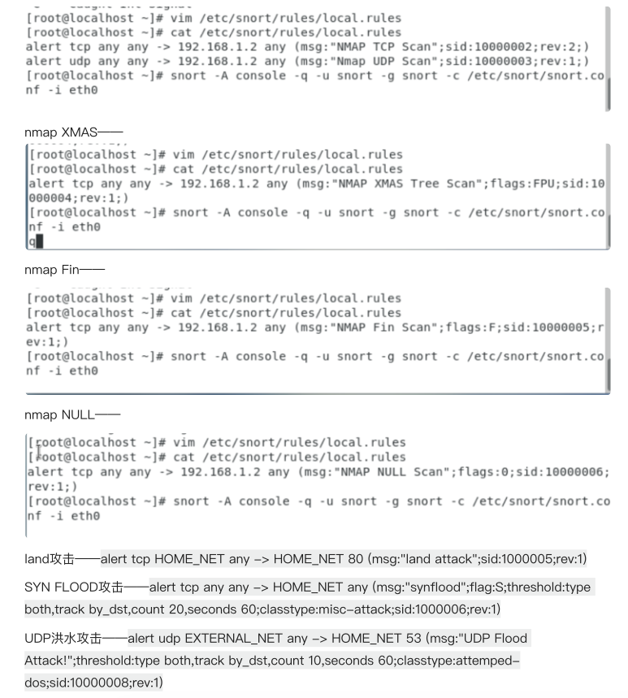

答案来自于网络搜索，仅用于期末考试开卷使用。
除了书中密码学部分，其他的题目基本都有（主观题）。
第一章 引言
1.简述通信安全、计算机安全和网络安全的联系和区别
通信安全指对通信过程中传输的信息施加保护；计算机安全是对计算机系统中的信息保护，包括操作系统安全和数据库安全；网络安全包括网络边界安全、Web安全和电子邮件安全等内容。
2.基本的安全威胁有哪些？主要的渗入类型威胁是什么？主要的植入类型威胁是什么？请列出几种主要的威胁。
基本安全威胁：信息泄露、完整性破坏、拒绝服务、非法使用。
主要渗入类型威胁：假冒、旁路控制、授权侵犯。
主要植入类型威胁：特洛伊木马、陷门。
3.安全领域中，除了采用密码技术的防护措施之外，还有哪些其他类型的防护措施？
物理安全、人员安全、管理安全、媒体安全、辐射安全、生命周期控制。
4.什么是安全策略？安全策略有几个不同的等级？
在某个安全域内，施加给所有与安全相关活动的一套规则。
等级：安全策略目标、机构安全策略、系统安全策略。
5.什么是访问控制策略？什么是MAC？什么是DAC？
访问控制策略属于系统级安全策略，它迫使计算机系统和网络自动地执行授权。
MAC是强制性访问控制策略，由安全域中的权威机构强制实施，任何人不可回避；
DAC是自主性访问控制策略，为特定的一些用户提供了访问资源的权限，此后可以利用此权限控制这些用户对资源的进一步访问。
6.主动攻击和被动攻击有什么区别？请举例说明？
主动攻击是指恶意篡改或伪造数据流等攻击行为，包括：伪装攻击、重放攻击、消息篡改、拒绝服务攻击；
被动攻击是对所传输的信息进行窃听和监测，目标是获得线路上所传输，包括窃听攻击和流量分析。
7.网络攻击的常见形式有哪些？请逐一加以评述。
常见形式包括以下：
口令窃取，对于攻击者，有三种基本方式猜测口令，第一种是利用已知或假定的口令尝试登录，第二种是根据窃取的口令文件进行猜测（包含字典攻击），第三种是窃听某次合法终端之间的会话，并记录所用的口令。在防护上，可以加强对用户的培训，如果无法阻止选择低级的口令，那么需要对口令文件进行严格的保护。
欺骗攻击，是采用欺骗的方式获取登录权限。
缺陷和后门攻击，程序中的某些代码可能不能满足特定的需求，攻击者可以利用这些缺陷发起攻击。在编写网络服务器软件时，要充分考虑如何防止黑客的攻击行为（例如验证输入数据的正确性，例如验证输入数据的长度和存储区分配的占用情况），对输入语法做出正确的定义，必须遵守最小特权的原则。
认证失效，通过使认证机制失效实现攻击。应对方案是修改认证方案来消除缺陷，例如基于“挑战/响应”的认证机制。
协议缺陷，利用协议而不是系统的缺陷，例如TCP序列号攻击。
信息泄露，利用泄露的信息推理和分析，得到有价值的信息。
指数攻击，包括病毒和蠕虫，病毒依附于其他程序传播，蠕虫可自行传播，两者的传播方式具有指数增长的数学模型。如果不与受传染的主机通信，就不会感染病毒。
拒绝服务攻击，DoS攻击通过过度使用服务，让软件或硬件过度运行，使网络连接超出其容量，目的是造成自动关机或系统瘫痪，或者降低服务质量。DDoS攻击使用很多的Internet主机，同时向目标发起攻击。
8.请简述安全服务和安全机制之间的关系。
安全服务是一种由系统提供的对资源进行特殊保护的进程或通信服务。安全服务通过安全机制来实现安全策略。
9.请画出一个通用的网络安全模型，并说明每个功能实体的作用。

10.什么是安全威胁、安全防护和风险？
安全威胁是指某个人、物、事件或概念对某一资源的保密细腻个、完整性、可用性或合法使用所造成的威胁。
安全防护是指保护资源免受威胁的一些物理的控制、机制、策略和过程。脆弱性是指在实施防护措施中或缺少防护措施时系统所具有的弱点。
风险是某个已知的、可能引发某种成功攻击的脆弱性的代价的测度。与价值和攻击成功的概率成正相关。
11.什么是授权？
授权是安全策略的一个基本组成部分。所谓授权，指主体对客体的支配权利，规定了谁可以对谁做什么。
第三章 Internet协议的安全性
1.简述以太网上一次TCP会话所经历的步骤和涉及的协议。
如果本地没有ARP表，发送ARP请求建立ARP表。向目的IP发送SYN建立请求，对方回复SYN、ACK报文，我方再回复ACK报文，建立TCP连接。然后发送TCP报文。
2.在TCP连接建立的3步握手阶段，攻击者为什么可以成功实施SYN Flood攻击？在实际中，如何防范此类攻击？
服务器响应SYN报文时，会建立一个连接监听，当收到大量的SYN报文时，服务器就会超出负载。防范的方法包括：建立防火墙或者加固TCP/IP协议栈。
3.如何封装一个源路由数据包？允许这种数据包通过防火墙会对内部网络安全造成什么影响？
源路由选项是IP数据包头部的选项，在打开这个选项时，路由器会在字段中添加路由信息。恶意的路由器可以制造假的路由信息对网络进行攻击。
4.为什么UDP比TCP更加容易遭到攻击？
UDP连接不验证对方，更容易被欺骗。也相比TCP缺少各种机制，包括拥塞控制、校验等。
由于UDP自身缺少流控制特性，所以采用UDP进行大流量的数据传输时，就可能造成堵塞主机或路由器，并导致大量的数据包丢失；UDP没有电路概念，所以发往给定端口的数据包都被发送给同一个进程，而忽略了源地址和源端口号；UDP没有交换握手信息和序号的过程，所以采用UDP欺骗要比使用TCP更容易。
5.为什么路由协议不能抵御路由欺骗攻击？如何设置路由器抵御这一攻击？
高层的TCP和UDP服务在接收数据报时，通常假设数据报中的源地址是有效的。但事实上，IP层不能保证IP数据报一定是从源地址发送的。任意一台主机都可以发送具有任意源地址的IP数据报。攻击者可以伪装成另一个网络主机，发送含有伪造源地址的数据包以欺骗接收者。
通过源地址鉴别机制加以防御。
7.通过DNS劫持会对目标系统产生什么样的影响？应该如何避免？
通过劫持了DNS服务器，通过某些手段取得某域名的解析记录控制权，进而修改此域名的解析结果，导致对该域名的访问由原IP地址转入到修改后的指定IP，其结果就是对特定的网址不能访问或访问的是假网址。
避免DNS劫持：暴露的主机不要采用基于名称的认证；不要把秘密的信息放在主机名中；进行数字签名。
8.简述IPv6和IPv4的数据包格式的异同。在IPv4网络上打通IPv6隧道的方式有哪些？
IPv6和IPv4之间的最大差别在于：IP地址的长度从32位到128位。通过裁剪IPv4报头中的某些字段，或把一些字段移入到扩展报头中，IPv6基本报头的总长度大大减小了。IPv6使用固定长度的基本报头，从而简化了转发设备对IPv6报文的处理，提高了转发效率。尽管IPv6地址长度是IPv4地址长度的4倍，但IPv6基本报头的长度只有40字节，为固定的IPv4报文头长度(不包括选项字段)的2倍。
9.IPv6和IPv4网络能否互通？如果可以，需要哪些辅助措施？
可以。双栈协议、隧道技术、协议转换。
10.能否在ARP层进行会话的劫持？如果能，原理是什么？
ARP攻击。
原理：ARP中毒、ARP欺骗，比如可以欺骗目标主机，服务器ip的MAC地址是自己，然后欺骗服务器，目标主机的IP的MAC地址也是自己，这样就可以实现对两者会话的劫持。
11.黑客为什么可以成功实施ARP欺骗攻击？在实际中如何防止ARP欺骗攻击？
因为ARP协议有漏洞。
配置802.1x协议，或者采用静态arp表。
12.判断下列情况是否可能存在？为什么？(1)通过ICMP数据包封装数据，与远程主机进行类似UDP的通信。(2)通过特意构造的TCP数据包，中断两台机器之间指定的一个TCP会话。
(1)不存在。TCP/UDP是传输层(四层)的协议,只能为其上层提供服务,而ICMP是网络互联层(三层)的协议,怎么可能反过来用四层协议来为比它还低层的数据包来服务呢。（不保真）
(2)如果攻击者能够预测目标主机选择的起始序号,他就可能欺骗该目标主机,使目标主机相信自己正在与一台可信的主机会话。
13.什么是ICMP重定向攻击？如何防止此类攻击？
ICMP提供了IP路由和交付问题的关键反馈信息。攻击者利用ICMP可以对路由进行重定向攻击；在防火墙中禁用ICMP功能；防火墙应该具有状态检测、细致的数据包完整性检查和很好的过滤规则控制功能。
14.在内部以太局域网中，能否根据一个ARP地址(MAC地址)唯一确定一台主机？能否根据给定的一个ARP地址唯一确定拥有者的身份？
主机的MAC地址唯一且固定。但不能表示身份。
15.DNS可能遭到的攻击有哪些？DNSsec协议有哪些优点？
DNS缓存投毒、DNS劫持、域名劫持、DNS ddos攻击等。DNSsec是DNS的安全扩展，可以对DNS记录进行数字签名。
16.在邮件应用中，IMAP与POP相比较，最大改进是什么？
IMAP是分布式的，具有摘要阅读、选择性下载附件、服务器缓存。
17.FTP和H.323都被称为动态协议，为什么？
可能是因为二者都是有状态的。
18.使用SSH进行通信是否能够避免会话劫持？为什么？
不能。SSH的信息交换基于主机密钥，如果没有可信的认证机构对服务器的真实性进行验证的话，可能会被欺骗。
19.SNMPv1和SNMPv3有哪些不同？SNMPv3中主要做了哪些改进？
SNMPv3主要针对安全做了改进，包括加密算法、身份认证。
20.简述在多播通信中，通信各方发送数据包的类型，以及源、目的地址的特征。
是基于UDP的组播数据包。源地址是本机地址，目的地址是组播地址。
21.电子邮件系统通常面临哪些安全风险？在实际中，人们采用哪些安全措施来提高邮件系统的安全性？
窃听、篡改、DDOS攻击、蠕虫等。身份认证、消息加密、防火墙检测。
22.FTP服务存在哪些安全风险？应如何做才能消除或减少这些安全风险？
FTP反弹攻击，伪装FTP请求，口令泄露，ftpd权限问题。限制port命令的使用，密文传输数据，身份认证。
23.请比较Telnet和SSH协议的异同，并用Sniffer软件捕捉其数据包查看两者的数据包内容有何不同。
同：
两种协议都可以远程登录另一台主机
两种协议都属于基于TCP/IP的协议
异：
telnet是明文传送；ssh是加密传送，并且支持压缩。
telnet的默认端口号为23；ssh的默认端口号为22。
ssh使用公钥对访问的服务器的用户验证身份，进一步提高的安全性；telnet没有使用公钥。
24.简述H.323协议与 SIP的异同。
H.323沿用的是传统的实现电话信令模式，比较成熟，已经出现了不少H.323产品。H.323符合通信领域传统的设计思想，进行集中、层次控制，采用H.323协议便于与传统的电话网相连。SIP协议借鉴了其它因特网的标准和协议的设计思想，在风格上遵循因特网一贯坚持的简练、开放、兼容和可扩展等原则，比较简单。
第十二章 防火墙技术
1.防火墙一般有几个接口？什么是防火墙的非军事区（DMZ）？它的作用是什么？
答：防火墙一般有3个或3个以上的接口。网关所在的网络称为‘非军事区’（DZM）。网关的作用是提供中继服务，以补偿过滤器带来的影响。
2.为什么防火墙要具有NAT功能？在NAT中为什么要记录端口号？
答：使用NAT的防火墙具有另一个优点，它可以隐藏内部网络的拓扑结构，这在某种程度上提升了网络的安全性。在NAT中记录端口号是因为在实现端口地址转换功能时，两次NAT的数据包通过端口号加以区分。
3.系统中提到了NAT的几种实现方式，试着给出M-N的NAT转换算法。
动态NAT、静态NAT、端口多路复用PAT。
4.防火墙必须同时兼有路由器功能吗？为什么？
必须。因为防火墙本身是连接两个网络的，本身必须具有转发功能。
5.简述静态包过滤防火墙的工作原理，并分析其优缺点。动态包过滤防火墙与静态包过滤防火墙的主要区别是什么？
根据静态规则过滤数据包。
性能好、成本低；安全性低、缺少状态感知能力、容易遭受IP欺骗、创建访问控制策略难。
区别：
静态包过滤
使用分组报头中存储的信息控制网络传输。当过滤设备接收到分组时，把报头中存储的数据属性与访问控制策略对比（称为访问控制表或ACL），根据对比结果的不同，决定该传输是被丢弃还是允许通过。
依据：
1、包的目的地址及目的端口
2、包的源地址及源端口
3、包的传送协议
（1）基于TCP的传输：根据TCP报头的标志字来控制传输
（2）基于UDP的传输：根据端口号来控制
动态包过滤：
通过包的属性和维护一份连接表来监视通信会话的状态而不是简单依靠标志的设置。
针对传输层的，所以选择动态包过滤时，要保证防火墙可以维护用户将要使用的所有传输的状态，如TCP，UDP，ICMP等。
静态基于数据包 动态基于会话。
6.分组过滤的3大操作是什么？
1)根据内部网络的安全策略制定分组过滤规则。
2)分组过滤路由器对分组的头部进行分析，按照分组过滤规则的存贮顺序依次对分组进行检查。
3)如果在分组过滤规则表中找到一个适用于此分组的规则，而该规则规定阻塞该分组，那么该分组被阻塞。
4)如果在分组过滤规则表中找到一个适用于此分组的规则，而该规则规定允许该分组通过，那么系统就允许该分组通过。
5)如果在规则表中没有适用于该分组的过滤规则，那么，根据缺省规定，则该分组被阻塞(根据缺省拒绝原则)或被允许通过(根据缺省允许原则)。
一旦分组过滤器已经检查完了一个分组，这时有两种可能性：一是将这个分组传送。通常，如果一个分组通过了分组过滤规则的检查被允许通过，路由器则像一个普通的路由器那样将这些分组传向它的目的地；另一种情况是丢弃分组。如果按照分组过滤规则，被检查的分组不被允许通过，那么分组过滤路由器将丢弃该分组。
至于是哪三个，自己概括。。。
7.结合实际操作，描述动态防火墙在TCP连接终止时的状态转换。
8.电路级网关与包过滤防火墙有何不同？简述电路级网关的优缺点。
对二者的特点，原理进行重复就行了。
电路级网关：
电路级网关用来监控受信任的客户或服务器与不受信任的主机间的TCP握手信息,这样来决定该会话是否合法,电路级网关是在OSI模型中会话层上来过滤数据包,这样比包过滤防火墙要高两层。在第一个防火墙主机和第二个之间建立安全的连接。这种结构的好处是当一次攻击发生时能提供容错功能。
电路级网关还提供一个重要的安全功能：网络地址转移(NAT)将所有公司内部的IP地址映射到一个“安全”的IP地址，这个地址是由防火墙使用的。
9.应用级网关与电路级网关有何不同？简述应用级网关的优缺点。
答：与电路级网关不同的是应用级网关必须针对每个特定的服务运行一个特定的代理，它只能对特定服务所生成的数据包进行传递和过滤。
应用级网关的优点：
1、在已有的安全模型中安全性较高
2、具有强大的认证功能
3、具有超强的日志功能
4、应用级网关防火墙的规则配置比较简单
缺点：1、灵活性差 2、配置复杂 3、性能不高
12、切换代理在连接建立阶段工作于会话层，而在连接完成后工作于网络层，这样的设计有何好处？简述切换代理的优缺点。

14.防火墙有什么局限性？
答：防火墙是Internet安全的最基本组成部分，但对于内部攻击以及绕过防火墙的连接却无能为力，另外，攻击者可能利用防火墙为某些业务提供的特殊通道对内部网络发起攻击，注入病毒或木马。
15.软件防火墙与硬件防火墙之间的区别是什么
答：软件防火墙是利用CPU的运算能力进行数据处理，而硬件防火墙使用专用的芯片级处理机制。
第十三章 入侵检测系统
1、入侵检测系统的定义是什么
能对企图入侵、正在入侵和已经发生的入侵行为进行识别的系统。
2、入侵检测系统按照功能可分为哪几类，有哪些主要功能?
答：功能构成包含：事件提取、入侵分析、入侵响应、远程管理4个部分功能
1、网络流量的跟踪与分析功能
2、已知攻击特征的识别功能
3、异常行为的分析、统计与响应功能
4、特征库的在线和离线升级功能
5、数据文件的完整性检查功能
6、自定义的响应功能
7、系统漏洞的预报警功能
8、IDS探测器集中管理功能
3、一个好的IDS应该满足哪些基本特征？
答：
先进的响应能力；对性能损失小；无人监管也能正常运行；自身安全；给管理者提供完整信息；可管理性；可扩展性好；支持IP、TCP重组；支持TCP状态检测；支持应用层协议解码；配置简单，非专业人员也可使用；兼容性好。
4、常用的入侵检测模型
异常检测模型、误用检测模型等。
5、分析基于异常和基于误用的优缺点
基于异常的检测，优点是能识别新的入侵。
误用，准确率高。
6、什么是异常检测，基于异常检测原理的入侵检测方法有哪些？
答：异常检测技术又称为基于行为的入侵检测技术，用来识别主机或网络中的异常行为。通过收集操作活动的历史数据，建立代表主机、用户或网络连接的正常行为描述，判断是否发生入侵。
1、统计异常检测方法
2、特征选择异常检测方法
3、基于贝叶斯网络异常检测方法
4、基于贝叶斯推理异常检测方法
5、基于模式预测异常检测方法
7、什么是误用检测，基于误用检测原理的入侵检测方法有哪些？
答：误用检测技术又称为基于知识的检测技术。它通过对已知的入侵行为和手段进行分析，提取检测特征，构建攻击模式或攻击签名，判断入侵行为。
1、基于条件的概率误用检测方法
2、基于专家系统误用检测方法
3、基于状态迁移分析误用检测方法
4、基于键盘监控误用检测方法
5、基于模型误用检测方法
8、简述NIDS和HIDS的区别
NIDS的目标是网络传输中的入侵；HIDS的目标是主机中的入侵。
NIDS和HIDS用到的技术不一样，NIDS的技术包括IP重组、TCP重组、TCP状态检测、协议分析、零复制技术、蜜罐等，优点是成本低、攻击者转移证据困难、实时监测和响应、能够检测未成功的攻击、独立于操作系统；HIDS的技术包括文件和注册表检测、内核编程防护技术（主要是钩子）、IIS保护技术、文件完整性分析技术等。
9、蜜网和蜜罐的作用？有什么优势？
设置蜜罐可以吸引攻击者的攻击，收集攻击者的攻击动作信息，以及给管理员反应攻击的时间。
优势：减少分析的数据量，也能了解网络所受的攻击。虚拟蜜罐还可以支持挂起功能，冻结被攻击机。
10、蜜网和蜜罐的作用是什么，它们在检测入侵方面有什么优势？
蜜罐的作用：1、把潜在入侵者的注意力从关键系统移开2、收集入侵者的动作信息3、设法让攻击者停留一段时间，使管理员能检测到它并采取相应的措施。
蜜网的作用：1、蜜网在确保不被入侵者发现诱骗的前提下，尽可能多地捕获攻击行为信息，2、Honeynet向Internet发起的连接进行跟踪，一旦Honeynet达到了规定的向外的连接数，防火墙将阻断任何后续的连接，并且及时向系统管理员发出警告信息3、IDS在数据链路层对蜜网中的网络数据流进行监控，分析和抓取以便将来能够重现攻击行为，同时在发现可疑举动时报警。
蜜罐和蜜网能从现存的各种威胁中提取有用的信息，发现新型的攻击工具，确定攻击模式并研究攻击者的攻击动机，从而确定更好的对策。
11、简述NIDS数据流程。
NIDS是基于网络的入侵检测系统，能够在网卡处截获网络中的数据包。由IP重组模块和TCP重组模块重组数据包，提交到内容分析模块，根据分析结果对数据包响应，并将事件整理提交到控制台，再交付到数据库中。
12、IDS在自身安全设计上注意哪些问题
首先IDS本身设计必须是安全的，自身要能够防护各种攻击，要做好IDS自身的登录认证，间隔性地检查和修复软件自身漏洞（如缓冲区溢出等），IDS自身的数据的存储和传输应是加密的（如安全套接层等），还要保证其完整性。也要考虑自身一旦被攻击的处理，比如断开网口等，保存数据。
13、画出IDS在实际网络中的部署图
IDS（入侵检测系统）的部署方式有两种：集中式和分布式
集中式部署方式是将IDS设备集中部署在网络的核心位置，通过监控网络流量、日志等信息来检测网络中的异常行为，并及时发出警报
分布式部署方式则是将IDS设备分散部署在网络的各个位置，通过监控网络流量、日志等信息来检测网络中的异常行为，并及时发出警报
(图略)
14、简述IDS发展方向
宽带高速实时监测技术、大规模分布式检测技术、数据挖掘技术、更先进的检测算法、入侵响应技术。
第十四章 VPN技术
题目略，只记录答案。
1、答：
虚拟专用网（VPN）
虚拟：因为是利用公网网络资源实现的，而不是单独专线实现，所以“专用网”是逻辑存在的，并没有物理专用线路，称为虚拟
专用：由于该网络通过加密方式利用公网资源构建一个安全的数据交换通道，就如同专线连接，因此称为专用
2、答：
虚拟专业网络VPN是指在公用网络上建立专用网络的技术。之所以称为虚拟网,因为整个VPN网络的任意两个节点之间的连接并没有传统专网所需的端到端的物理链路，而是架构在公用网络服务商所提供的网络平台。
VPN特点:
(1)使用VPN可降低成本——通过公用网来建立VPN，就可以节省大量的通信费用，而不必投入大量的人力和物力去安装和维护WAN(广域网)设备和远程访问设备。
(2)传输数据安全可靠——虚拟专用网产品均采用加密及身份验证等安全技术，保证连接用户的可靠性及传输数据的安全和保密性。
(3)连接方便灵活——用户如果想与合作伙伴联网，如果没有虚拟专用网，双方的信息技术部门就必须协商如何在双方之间建立租用线路或帧中继线路，有了虚拟专用网之后，只需双方配置安全连接信息即可。
(4)完全控制——虚拟专用网使用户可以利用ISP的设施和服务，同时又完全掌握着自己网络的控制权。用户只利用ISP提供的网络资源，对于其它的安全设置、网络管理变化可由自己管理。在企业内部也可以自己建立虚拟专用网。
3、答：
IP泄漏保护、是否提供IKS、无日志策略
4、答：
传输模式和隧道模式。
区别参考书中两种模式的数据包封装图，可以对数据包结构进行叙述。
5、答：
P402，AH的作用
6、答：
参考书中AH和ESP协议的概念。
7、答：
IKE为IPSec提供了自动协商密钥、建立IPSec安全联盟的服务，能够简化IPSec的使用和管理，大大简化IPSec的配置和维护工作。

IKE与IPSec的关系如上图所示，对等体之间建立一个IKE SA完成身份验证和密钥信息交换后，在IKE SA的保护下，根据配置的AH/ESP安全协议等参数协商出一对IPSec SA。此后，对等体间的数据将在IPSec隧道中加密传输。
8、9、10、答：
书上都有，三种VPN的原理、优缺点
12、答：
TLS VPN有很多优点，但并不能取代IPSec VPN。
IPSec VPN主要提供LAN-to-LAN的隧道安全连接。
在为企业高级用户提供远程访问及为企业提供LAN-to-LAN隧道连接方面，IPSec具有无可比拟的优势。
IPSec VPN厂商开始研究让IPSec VPN 兼容TLS VPN，以增强可用性。届时，IPSec VPN的扩展性将大大加强。
然后再反过来说SSL VPN的一些优点以及应用场景。
其他
网关与路由器的区别：
网关是访问路由器的IP，其他的电脑必须和网关一个IP段才能访问路由器，比如说路由器的IP是192.168.0.1（这个就是网关）也是进路由器必须的地址，其他的主机也必须是192.168.0.X（2—254之间任意一个数字）这样才能访问路由器也就是说这样才能上网，电脑上的网关地址就要填写192.168.0.1

